I. An toàn khi sử dụng thiết bị thí nghiệm
1. Sử dụng các thiết bị điện
Trong số các thí nghiệm vật lí phổ thông thì các thiết bị sử dụng điện có nguy cơ mất an toàn cao nhất. Cần quan sát kĩ các kí hiệu và nhãn thông số trên thiết bị để sử dụng đúng chức năng, đúng yêu cầu kĩ thuật.
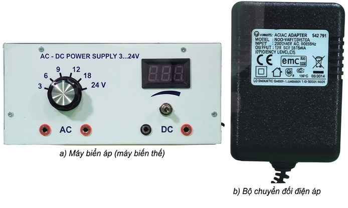
Hình 2.1. Hai loại thiết bị cung cấp nguồn điện
❓ Quan sát thiết bị và thảo luận trả lời các câu hỏi:
- Chức năng của hai thiết bị là gì? Giống và khác nhau như thế nào?
- Bộ chuyển đổi điện áp (Hình 2.1b) sử dụng hiệu điện thế vào bao nhiêu?
- Các hiệu điện thế đầu ra như thế nào?
- Những nguy cơ nào có thể gây mất an toàn hoặc hỏng các thiết bị khi sử dụng thiết bị chuyển đổi điện áp này?
- Câu 1: Cả hai đều có chức năng cung cấp nguồn điện. Khác nhau: Hình (a) là máy biến áp xoay chiều, đổi điện áp AC. Hình (b) chuyển đổi điện AC sang DC và có thể điều chỉnh nhiều mức điện áp đầu ra.
- Câu 2: Bộ chuyển đổi (b) sử dụng hiệu điện thế vào (INPUT) là \( 220 - 240 \text{V AC} \).
- Câu 3: Các hiệu điện thế đầu ra (OUTPUT) có thể điều chỉnh ở các mức: \( 3\text{V}, 6\text{V}, 9\text{V}, 12\text{V}, 18\text{V}, 24\text{V} \) (cả AC và DC).
- Câu 4: Nguy cơ: Chọn sai mức điện áp đầu ra (quá cao) làm hỏng thiết bị thí nghiệm; cắm nhầm chốt cắm AC/DC; chạm tay vào các chốt kim loại khi đang có điện gây giật.
Bảng 2.1. Một số kí hiệu trên các thiết bị thí nghiệm
| Kí hiệu | Mô tả | Kí hiệu | Mô tả |
|---|---|---|---|
| DC hoặc dấu - | Dòng điện một chiều | "+" hoặc màu đỏ | Cực dương |
| AC hoặc dấu ~ | Dòng điện xoay chiều | "-" hoặc màu xanh | Cực âm |
| Input | Đầu vào | Dụng cụ đặt đứng | |
| Output | Đầu ra | 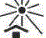 |
Tránh ánh nắng trực tiếp |
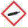 |
Bình khí nén áp suất cao | Dụng cụ dễ vỡ | |
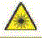 |
Cảnh báo tia laser | 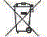 |
Không được vứt vào thùng rác |
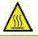 |
Nhiệt độ cao | 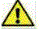 |
Lưu ý cẩn thận |
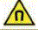 |
Từ trường |
2. Sử dụng các thiết bị nhiệt và thuỷ tinh
Các thiết bị đun nóng có thể gây bỏng với người sử dụng, gây nứt, vỡ các bộ phận làm bằng thuỷ tinh.
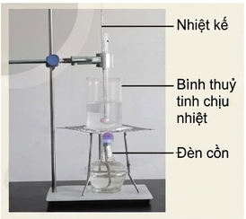
Hình 2.2. Thí nghiệm đo nhiệt độ sôi của nước
❓ Câu hỏi:
Quan sát thiết bị thí nghiệm về nhiệt học ở Hình 2.2 và cho biết: đặc điểm của các dụng cụ thí nghiệm trong khi tiến hành thí nghiệm để đảm bảo an toàn cần chú ý đến điều gì?
Trả lời: Cần chú ý: Đèn cồn dễ gây cháy, bình thuỷ tinh đun nóng ở nhiệt độ cao dễ nứt vỡ, nước sôi dễ gây bỏng. Cần dùng găng tay chịu nhiệt, để xa các vật liệu dễ cháy, sử dụng kẹp hoặc giá đỡ chắc chắn, không chạm tay trực tiếp vào bình hay nhiệt kế đang nóng.
3. Sử dụng các thiết bị quang học
Các thiết bị quang học rất dễ mốc, xước, nứt, vỡ và dính bụi bẩn, làm ảnh hưởng đến đường truyền tia sáng và sai lệch kết quả thí nghiệm.
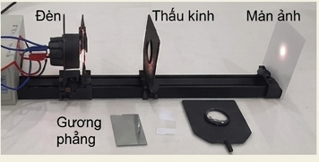
Hình 2.3. Bộ thí nghiệm quang hình
❓ Câu hỏi:
Quan sát thiết bị thí nghiệm quang hình (Hình 2.3) và cho biết: đặc điểm của các dụng cụ thí nghiệm khi sử dụng và bảo quản thiết bị cần chú ý đến điều gì?
Trả lời: Thấu kính, gương rất dễ xước và mờ. Khi sử dụng không được dùng tay chạm trực tiếp vào bề mặt quang học. Sau khi dùng phải lau bằng giấy mềm chuyên dụng, cất vào hộp bảo quản có túi hút ẩm để chống nấm mốc. Không làm rơi để tránh nứt vỡ.
II. Nguy cơ mất an toàn trong sử dụng thiết bị thí nghiệm Vật lí
1. Nguy cơ gây nguy hiểm cho người sử dụng
Việc thực hiện sai thao tác sử dụng các thiết bị có thể dẫn đến nguy hiểm cho người sử dụng. Vì vậy, khi tiến hành thí nghiệm cần tuân thủ nghiêm ngặt các quy định trong phòng thực hành và hướng dẫn của giáo viên.
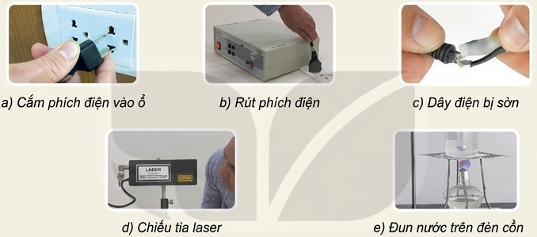
Hình 2.4. Một số thao tác có thể gây mất an toàn khi sử dụng thiết bị thí nghiệm
✍️ Hoạt động:
Em hãy quan sát một số hình ảnh về thao tác sử dụng các thiết bị thí nghiệm trong Hình 2.4 và dự đoán xem có những nguy cơ nào có thể gây nguy hiểm. Kể thêm những thao tác khác có thể gây nguy hiểm.
- (a) & (b): Cắm/rút phích điện không cầm vào phần nhựa cách điện mà kéo dây hoặc cầm sát chân cắm ➔ Nguy cơ điện giật.
- (c): Dây điện bị sờn rách, hở lõi đồng ➔ Nguy cơ chập cháy, điện giật.
- (d): Chiếu tia laser trực tiếp hoặc phản chiếu vào mắt ➔ Hỏng võng mạc.
- (e): Đun nước trên đèn cồn không cẩn thận ➔ Đổ nước sôi, đổ đèn cồn gây hoả hoạn, bỏng.
- Thao tác nguy hiểm khác: Đổ nước vào acid đặc, dùng tay trần gỡ mảnh vỡ thuỷ tinh, để hoá chất gần ổ cắm điện,...
2. Nguy cơ hỏng thiết bị đo điện
Khi sử dụng các thiết bị đo điện cần chọn đúng thang đo, không nhầm lẫn khi thao tác để đảm bảo an toàn cho thiết bị đo.
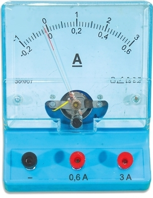
Hình 2.5. Ampe kế
❓ Câu hỏi:
- Giới hạn đo của ampe kế ở Hình 2.5 là bao nhiêu?
- Nếu sử dụng ampe kế để đo dòng điện vượt quá giới hạn đo thì có thể gây ra nguy cơ gì?
Câu 1: Tuỳ theo chốt cắm ta chọn. Giới hạn đo có thể là \( 0.6 \text{ A} \) hoặc \( 3 \text{ A} \).
Câu 2: Nếu đo dòng điện vượt quá giới hạn đo, kim ampe kế sẽ bị lệch mạnh va vào chốt cản làm hỏng kim, cuộn dây bên trong bị quá tải nhiệt gây đứt, cháy hỏng hoàn toàn ampe kế.
Khi sử dụng đồng hồ đo điện đa năng, cần lưu ý:
- Chọn chức năng và thang đo phù hợp.
- Cắm dây đo vào chốt cắm phù hợp với chức năng đo.

Hình 2.6. Đồng hồ đo điện đa năng kim (a) và hiện số (b)
❓ Câu hỏi:
Điều chỉnh vị trí của kim đo, chọn thang đo và cắm các dây đo trên đồng hồ đa năng (Hình 2.6) để đo hiệu điện thế, cường độ dòng điện và điện trở như thế nào?
- Cắm dây: Dây đen luôn cắm chốt COM. Dây đỏ cắm chốt V/Ω/mA khi đo điện áp/điện trở/dòng nhỏ; cắm chốt 10A khi đo dòng điện lớn.
- Chọn thang đo: Xoay núm vặn về khu vực có kí hiệu tương ứng: V~ (AC) hoặc V- (DC) để đo điện áp; A~ hoặc A- để đo dòng điện; kí hiệu Ω để đo điện trở.
- Mức thang đo: Luôn chọn thang đo ở mức cao nhất trước, sau đó giảm dần cho đến khi đọc được giá trị chính xác để tránh hỏng đồng hồ.
3. Nguy cơ cháy nổ trong phòng thực hành
Khi tiến hành thí nghiệm với các thiết bị điện và những hoá chất, chất dễ cháy nổ trong phòng thực hành cần tuân thủ quy tắc an toàn, nhất là những quy tắc an toàn về phòng cháy chữa cháy và an toàn khi sử dụng hoá chất dễ cháy, nổ.
Khi có đám cháy cần chú ý:
- Ngắt toàn bộ hệ thống điện.
- Đưa toàn bộ các hoá chất, các chất dễ cháy ra khu vực an toàn.
- KHÔNG được sử dụng nước dập đám cháy nơi có thiết bị điện, chất lỏng nhẹ hơn nước (dầu, cồn...).
- KHÔNG được sử dụng \( CO_2 \) để dập đám cháy quần áo trên người hoặc cháy kim loại kiềm, các chất cháy tách oxygen...

Hình 2.7. Một số tình huống có thể gây cháy nổ
✍️ Hoạt động:
Em hãy quan sát Hình 2.7 và dự đoán có những nguy cơ cháy nổ nào có thể xảy ra.
- (a) Để các kẹp điện gần nhau: Dễ chạm nhau gây đoản mạch, xẹt tia lửa điện gây cháy nổ hoặc hỏng nguồn.
- (b) Để chất dễ cháy gần mạch điện: Tia lửa điện từ mạch (khi đóng ngắt) có thể bắt lửa hơi cồn hoặc vật liệu dễ cháy.
- (c) Đun nước nhiệt độ cao không đeo găng: Rơi vỡ bình chứa nước sôi vào đèn cồn đang cháy lan ra bàn.
III. Quy tắc an toàn trong phòng thực hành
- Đọc kĩ hướng dẫn sử dụng thiết bị và quan sát các chỉ dẫn, các kí hiệu.
- Kiểm tra cẩn thận thiết bị, phương tiện, dụng cụ trước khi sử dụng.
- Chỉ tiến hành thí nghiệm khi được sự cho phép của giáo viên.
- Tắt công tắc nguồn thiết bị điện trước khi cắm hoặc tháo.
- Chỉ cắm thiết bị điện vào nguồn khi hiệu điện thế phù hợp.
- Bố trí dây điện gọn gàng, không bị vướng qua lại.
- Không tiếp xúc trực tiếp vật nóng khi không có dụng cụ bảo hộ.
- Không để dung dịch dẫn điện, chất dễ cháy gần thiết bị điện.
- Giữ khoảng cách an toàn với thí nghiệm nung nóng, bắn ra, tia laser.
- Vệ sinh, sắp xếp gọn gàng, đổ rác đúng nơi quy định sau thí nghiệm.
Lưu ý quan trọng
Khi phát hiện người bị điện giật cần nhanh chóng ngắt nguồn điện hoặc sử dụng vật cách điện để tách người bị nạn ra khỏi nguồn điện.

Hình 2.8. Các biển báo trong phòng thí nghiệm
✅ Em đã học
- Để đảm bảo an toàn khi sử dụng thiết bị, cần đọc kĩ hướng dẫn và các kí hiệu trên thiết bị.
- Thực hiện nghiêm túc các quy định về an toàn trong phòng thực hành.
💡 Em có biết?
- Sốc điện (hay điện giật): Xảy ra khi dòng điện chạy qua người, có thể gây tổn thương hoặc tử vong.
- Khi có hoả hoạn cần bình tĩnh, sử dụng biện pháp dập lửa theo hướng dẫn của phòng thực hành.
🚀 Em có thể
Giải thích được vì sao:
1. Khi sử dụng thiết bị đo điện, phải luôn đặt ở thang đo phù hợp.
2. Khi sử dụng máy biến áp phải đặt nút điều chỉnh điện áp ở mức thấp nhất rồi tăng dần lên.
Phần củng cố & Vận dụng
A. Bài tập trắc nghiệm
B. Bài tập vận dụng tính toán
Bài 1: Tính toán giới hạn an toàn
Dòng điện đi qua cơ thể người có cường độ từ \( I = 10 \text{ mA} \) trở lên sẽ gây nguy hiểm. Một người có điện trở cơ thể khi da khô là \( R = 100 \text{ k}\Omega \). Hỏi nếu vô tình chạm vào nguồn điện có hiệu điện thế \( U = 220 \text{ V} \), dòng điện chạy qua cơ thể là bao nhiêu? Có gây nguy hiểm đến tính mạng không?
Giải:
Đổi: \( R = 100 \text{ k}\Omega = 100,000 \, \Omega \).
Áp dụng định luật Ohm: \( I = \frac{U}{R} = \frac{220}{100,000} = 0.0022 \text{ A} \).
Đổi ra mA: \( 0.0022 \text{ A} = 2.2 \text{ mA} \).
Kết luận: \( I = 2.2 \text{ mA} < 10 \text{ mA} \). Trong trường hợp da rất khô, mức dòng điện này gây cảm giác tê nhưng chưa đe dọa ngay đến tính mạng. Tuy nhiên, nếu da ướt (điện trở R giảm mạnh xuống còn khoảng \( 1000 \, \Omega \)), cường độ sẽ là \( I = \frac{220}{1000} = 220 \text{ mA} \), chắc chắn gây tử vong.
Bài 2: Hiện tượng đoản mạch
Trong phòng thí nghiệm, một nguồn điện DC có \( U = 12 \text{ V} \) đang được sử dụng. Nếu học sinh vô tình để rơi đoạn dây dẫn kim loại (có điện trở \( R \approx 0.05 \, \Omega \)) vắt qua hai cực của nguồn tạo thành đoạn mạch ngắn. Tính cường độ dòng điện đi qua đoạn dây lúc đó (Bỏ qua điện trở trong của nguồn). Hiện tượng này gọi là gì và hậu quả ra sao?
Giải:
Dòng điện qua dây: \( I = \frac{U}{R} = \frac{12}{0.05} = 240 \text{ A} \).
Hiện tượng: Đây là hiện tượng đoản mạch (ngắn mạch).
Hậu quả: Dòng điện cực lớn (240 A) tỏa ra lượng nhiệt khổng lồ (\( Q = I^2Rt \)) trong tích tắc, làm cháy đỏ dây dẫn, hỏng nguồn điện và có thể gây cháy nổ khu vực xung quanh ngay lập tức.
Bài 3: Lựa chọn thang đo Ampe kế
Một mạch điện có điện trở tương đương \( R_{td} = 50 \, \Omega \), mắc vào nguồn \( U = 12 \text{ V} \). Ta có hai ampe kế: Ampe kế (1) có giới hạn đo \( 200 \text{ mA} \), Ampe kế (2) có giới hạn đo \( 3 \text{ A} \). Hỏi phải chọn ampe kế nào để mắc nối tiếp vào mạch nhằm đo dòng điện an toàn và chính xác nhất?
Giải:
Tính dòng điện chạy trong mạch theo lý thuyết: \( I = \frac{U}{R_{td}} = \frac{12}{50} = 0.24 \text{ A} = 240 \text{ mA} \).
So sánh với giới hạn đo của dụng cụ:
- \( 240 \text{ mA} > 200 \text{ mA} \): Nếu dùng ampe kế (1), kim sẽ vượt vạch, cháy ampe kế.
- \( 0.24 \text{ A} < 3 \text{ A} \): Nếu dùng ampe kế (2), dụng cụ hoạt động an toàn.
Kết luận: Phải sử dụng Ampe kế (2) có giới hạn đo \( 3 \text{ A} \) để đảm bảo an toàn.